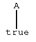
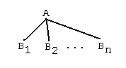
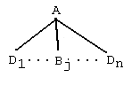

Example.
p(a,f(X),Y) <- q(X), r(Y)The example is not supposed to suggest any intuitive meaning for these rules (based on the way they might "look" to the reader). It is merely presented so as to be able to identify the structures that are now abstractly specified. We will specify various ways to interpret positive rulebases later in this section.
q(X) <- s(X)
s(a) <-
s(b) <-
s(g(b,a)) <-
r(b) <-
r(c) <-
Let us start with an abstract specification of what a positive rule is supposed to be and progressively specifiy all of the component structures that are required. Our convention will be that concrete rules will be written for the reader to read using fixed-width font (as displayed above) and the abstract forms (following below) will be displayed using variable-width font. (The actual appearance on your web page may vary slightly.) This terminology suggests that when one reads variable-width displays what is intended is a general abstract form, which when "filled in" gives actual concrete structures.
A positive rule has the form
H <- B1, B2, ..., Bnwhere H, B1, B2, ..., Bn are positive literals (defined below) and n >= 0. When n=0 then such a rule is written as
H <-H is referred to as the head of the rule and B1, B2, ..., Bn is the body of the rule. We say that the body is empty in the case that n = 0.
A positive literal has the form
P(T1,T2,...,Tk)where P is a predicate symbol and T1, T2, ..., Tk are terms (defined below) and k >= 0. The number k is referred to as the arity of the predicate symbol. When k=0 the literal has a simpler form
PLastly a term is either a constant
Cor a variable
Xor has the symbolic form
F(T1,T2,...,Tm)where F is a function symbol and T1, T2,..., Tm are also terms. The number k is referred to as the arity of the function symbol. When m=0 the terms has a simpler form
FNote that literals and terms have essentially the same abstract formation.
Now, in the example presented above the constant symbols (concrete terms or names) are
a b cthe variables are
X Ythe function symbols are
f gthe predicate symbols are
p q r sWhat are the literals? It is implicit that one must specify what the constants, variables, function symbols and predicate symbols are actually supposed to be. In these notes we will use the convention of using Prolog-like versions of these symbolic expressions. (Constants are alphabetic word-like expresions beginning with lower-case, variable are alphabetic word-like expresions beginning with upper-case, function and predicate symbols take the same form as constants but are kept distinct from constants and from each other.)
More generally, we will say that t is a term for the rulebaseR (or of the rulebase) provided that t simply follows the general formation rules for terms of R, but t might contain a variable that did not explicitly occur when R was presented. For example, f(g(S,a),f(W)), where S and W are taken as variables is considered to be a term for the example rulebase, because it is formed using R's constants, function symbols and some new variables. Similarly, a literal for R needs to use a predicate symbol actually occuring in R, follow the general formation rules for a prediact, but is allowed to use generally formed terms. Thus p(T,g(a,D),f(c)) is a literal for R, even though it did not specifically occur when R was presented.
Gwhere G is a positive literal for R (as discussed at the end of the previous subsection). A (general) goal has the form
G1, G2, ..., Gk.where k >= 1 and each Gj is a simple goal. A (general) goal is suppose to represent a conjunction of simple goals.
As an example, for the rulebase at the beginning of this chapter, the following are simple goals:
Notice that we are following the convention that a term of R can be freely formed using the constants and function symbols of R and any variables. We have simply defined the form that a goal has and we are not specifying a determination of whether a goal can be satisfied or produce answers. That comes later. Here are some general goals for the same rulebasep(X,Y,Z) p(a,g(b,X),c) s(Z)
q(a), s(b), r(c)The first state goal corresponds to asking the question whether q(a), s(b), andr(c) are all true. The second corresponds to asking the question whether either p(X,X,X)andr(X) are true (for some X, an answer presumably supplying the value of X).
p(X,X,X), r(X)
universe(R) =
{a,b,c,For some rulebases, universe(R) is much simpler. For example if R has no function symbols then universe(R) simple consists of all of the constants of R. So, in the case of the example
f(a), f(b), f(c),
f(f(a)), f(f(b)), f(f(c)),
...
g(a,a), g(a,b), g(a,c), g(b,a), g(b,b), g(b,c), g(c,a), g(c,b), g(c,c),
g(f(a),a), ... g(g(b,b), f(a)),
... }
p(a) <- q(b)universe(R) = {a,b}.
q(b) <-
If rulebase R has no constant symbols, it is conventional to supply one "dummy" constant. Let us use d for this dummy symbol. Then in the case of the rulebase
p(X) <- q(h(X))we have universe(R) = {d, h(d), h(h(d)), ...}.
q(Z) <-
Exercise 1. Formulate a recursive mathematical definition for universe(R) in general.
In the literature, universe(R) is called the Herbrand
universe of the rulebase, and is named after the mathematical logician
Jacques Herbrand.
s = {X/T}where X is a variable and T is a term for R.
A simple substitution acts on a symbolic experession (term, literal, rule, etc.) to produce a new form. For example, if s = {X/g(c,c)} then for the first sample rulebase
(p(a,f(X),Y) <- q(X), r(Y))s = p(a,f(g(c,c)),Y) <- q(g(c,c)), r(Y)that is, 'X' has been replaced by 'g(c,c)' everywhere that 'X' occurs.
A (general) substitution can be specified as
s = s1s2 ... skwhere each si is a simple substitution, k >= 0. When k = 0 (a special case), s is referred to as the empty substitution, and we could write s = {} . The substitutions are applied in the listed order (left-to-right). For example, if s = {X/g(c,a), Y/g(f(a),f(f(b)))} = s1s2 then
(p(a,f(X),Y) <- q(X), r(Y))s =If all of the variables in a symbolic form are substituted for, then the resulting symbolic form is said to be ground (no variables). A ground instance of a rule consists of a rule in which all of the variables have been substituted for in order to produce a ground expression, as on the right-hand side of the preceding equation.
p(a,f(g(c,a)),g(f(a),f(f(b)))) <- q(g(c,a)), r(g(f(a),f(f(b))))
Notice that s(g(a,a),c) is a ground literal of R. We can think of this ground literal as having been produced in many ways. It is, in its own right, a literal of R (using the liberal definition) that is in fact ground so. Or, we could observe that
s(g(a,a),c)= s(g(X,Y),Z)s where s = { X/a, Y/a, Z/c }.
Exercise 2. Specify some substitutions that could be used to entirely ground the first clause of the example rulebase.
Roughly speaking, an interpretation of a positive rulebase assigns certain
meanings or values to the arguments in the
rulebase clauses and gives truth values {true, false} to all clauses
of the rulebase and all goal expressions for the rulebase. A positive rulebase
is consistent provided that it has a model, that is, if there is an interpretation
of the rulebase which makes all of the rules in the rulebase true. A goal
is a consequence of a positive rulebase provided that every interpretation
that assigns true to every rule must also assign true to the goal. More
precise, technical definitions follow.
All of the interpretations that we will define will use universe(R) to assign meanings to the variables of clauses of R. It is possible to define interpretations over other domains, but this will not be necessary for our present purposes.
The base base(R) of a positive rulebase R is the collection of all grounded literals for R.
For the example rulebase, the base would be
base(R) = {p(U,V,W), q(U), r(U), s(U) | U,V,W in universe(R)}Exercise 3. Write out some actual elements in base(R) (e.g., p(a,a,f(c)), s(g(f(a),f(c)), etc.). Why is base(R) infinite?
The set base(R) represents all of the things that might or might not be true, relative to the rulebase R, depending on the actual, specific interpretation of R that one considers.
An interpretation I of R is a mapping from base(R) into the set {true,false}. Such a mapping I assigns specific truth values to the grounded literals of R.
For example, one interpretation for the example rulebase describe is I1(B) = true for every B in base(R). Now it will turn out that this interpretation will satisfy (make true) every clause of the rulebase. Thus interpretation I1is a model for the rulebase. It should be clear that the example rulebase has infinitely many interpretations. We need to define precisely how an interpretation is used to determine truth values for clauses and positive goals for a rulebase.
Suppose that I is an interpretation of positive rulebase R. The following definitions show how I determines a truth value for each clause of R. If C is a clause of R having the following form
A <- B1, B2, ... Bnthen I(C) = true provided that, for every grounding
A' <- B1', B2', ... Bn'of C, I assigns true to A' if it assigns true to all of the Bj'. Otherwise, I(C) = false. Informally, an interpretation assigns true to a clause provided it assigns truth to each of its possible ground instances over the domain of the R. Furthermore, an interpretation interprets the symbol ',' as 'and' and the symbol ':-' as 'if'.
In particular, if clause C has the fact form
A <-then I(C) = true provided that for every grounding
A' <-of C, I assigns true to A'. Otherwise, I(C) = false. Informally, an interpretation assigns true to a fact form clause provided it assigns true to each of its ground instances..
An interpretation satisfies R provided that it assigns true to each clause of P. In this case, the interpretation is a model for the rulebase.
Exercise 4. Fully specify an interpretation that does not satisfy the example rulebase.
Theorem 1. Every positive rulebase has at least one model.
Exercise 5. Prove Theorem 1.
Now, we also want to define the truth value that an interpretation I of a positive rulebase determines for a general goal for the rulebase. Assume that general goal G has the form
G1, G2, ..., GkThen I(G) = true provided that for every grounding
G1', G2', ..., Gk'of G, I assigns true to each of the Gi'. Otherwise I(G) = false. We also say that I satisfies G provided I(G) = true.
A goal G is a consequence of rulebase R if, and only if, for every interpretation I of R, if I satifies R then I must also satisfy G. When this is the case, we will write R => G.
Note that an interpretation is completely determined by the values that it asssigns to the base of the rulebase. When we write I(C), C a clause, or I(G), G a goal, we are referring to a well-defined extension of the original mapping I.
For the example rulebase R, let us argue that R => q(b) -- that is, that q(b) is a consequence of R. Accordingly, assume that I is an interpretation of R that satisfies every clause of R. Then, in particular I(s(b) <-) = true and I(q(b) <- s(b)) = true since I must assign true to each of the clauses of R. Consequently, I(s(b)) = true and I(q(b)) = true.
Exercise 6. Prove in detail that p(a,f(g(b,a),c) is a consequence of the example rulebase.
Exercise 7. Prove in detail that p(a,f(g(a,b)),c) is not a consequence of the example rulebase.
Exercise 8. Prove in detail
that p(a,f(g(b,a),Z) is not a consequence of the example
rulebase. Are there any goals with variables that could be
consequences of the example rulebase? Why?
For example, for example rulebase, s = {X/a, Y/f(b), Z/c} is an answer substitution for goal G = p(X,Y,Z) because R => p(X,Y,Z)s .
The empty substitution is an answer substitution for a grounded goal that is a consequence of the rulebase. For example, s = {} is an answer substitution for the goal G = p(a,f(b),c).
Exercise 9. List all answers for the goal p(X,Y,Z)
of the example rulebase.
M1(R) = { L | L <- is a ground instance of a rule in R }
M2(R) = { L | L <- B1, B2, ... Bn is a ground instance of a rule in R and B1, B2, ..., Bn are in M1(R) } ∪ M1(R)
...
Mk(R) = { L | L <- B1, B2, ... Bn is a ground instance of a rule in R and B1, B2, ..., Bn are in Mk-1(R) } ∪ Mk-1(R)
The minimal (Herbrand) model of R is defined
as the union of all of these sets
M(R) = ∪Mk(R) {k = 1,2,3,4, ...}M(R) represents all of the ground literals that must be 'true' about the rulebase R. Intuitively, M1(R) represents true things because they are expressed as "facts" in the rulebase R. Inductively, Mk(R) represents things that should be true because they follow using a rule of R and using previously established truths for R.
For the example rulebase from the beginning of this section, let us determine M(R).
M1(R) = { s(a), s(b), s(g(b,a)), r(b), r(c) }Notice that M3+j(R) = M3(R) for j >= 0, so the minimal model is computed by determination of M3(R).
M2(R) = { q(a), q(b), q(g(b,a)) } ∪M1(R)
M3(R) = { p(a,f(b),q(a)), p(a,f(b),q(b)), p(a,f(b),q(g(b,a))), p(a,f(c),q(a)), p(a,f(c),q(b)), p(a,f(c),q(g(b,a))) } ∪ M2(R)M(R) = M3(R)
If I is any model of R then consider the set
MI = {B | B in base(R) and I(B) = true }Thus, MI is the set of all things that I satisfies. Conversely, consider any subset M of base(R). Define IM to be the mapping, for B in base(R), defined by
IM(B) = true if B is a member of MThen, if we take I = IM we have MI = M.
IM(B) = false if B is not a member of M
The folowing theorem justifies the terminology the minimal model which was used when M(R) was defined.
Theorem 2. Suppose that I is a model of positive rulebase R. Then M(R) is a subset of MI.
proof. We use induction to show that each Mk (in the definition of M(R))is a subset of MI for each k. Suppose that A belongs to M1 (case k=1). Then A <- is a ground instance a rule of R. As such, since I is a model of R, I(A) = true, so A must belong to MI.
Now assume that each of M1, ..., Mk is a subset of MI, and suppose that A belongs to Mk+1. Then there must be a grounded rule of R of the form
A <- B1,...,Bnwhere each Bi belongs to Mk. By the induction hypothesis, Mk is a subset of MI so I(Bj) = true for each j. Since I is a model of R, I(A <- B1,..,Bn) = true, so I(A) = true, and thus A must belong to MI.
Thus each Mk is a subset of MI, and so M(R), the union, must also be a subset of MI.
In mathematical logic, it is common to talk about interpretations of logical rulebases over universes other than the Herbrand universe. However, the most important relationships are fully captured using just the Herbrand universe. The student is referred to the literature for the more general approach. See [Lloyd] in particular.
1. Suppose that A <- is a grounded rule of R. Then

is a rule tree. The root of this tree is A, the leaf is 'true'. The tree reflects the fact that the rule says that A is true.
2. Suppose that A <- B1, B2, ..., Bnis a grounded rule of R. Then

is a rule tree. The root of this tree is A, the leaves are B1, B2, ..., Bn.
3. Suppose that

is a rule tree having root A and leaves L={Bj} ∪ L1. Suppose further that T is a rule tree rooted at Bj having leaves L2. Then
is also a rule tree rooted at A, and having leaves L1 ∪
L2.
Example. Take as our positive rulebase the following sequence of rules.
a <- b, cAccording to the defintion that we have given for rule trees, the trees that we have in mind are built up from the bottom. From the third and fourth rules we can make the rule trees
b <- d
c <-
d <-
c dFrom the second rule we make rule tree
| |
true true
band then use part 3 of the definition of rule tree to extend this last tree so that we get the tree
|
d
bNow use the first weighted rule of the rulebase to produce the rule tree
|
d
|
true
aand then use part 3 of the definition twice (using the previously constructed trees) to produce the following rule tree
/ \
/ \
b c
aWe will see below that such a rule tree can be taken to suggest a kind of inference of its root from the rules of the rulebase.
/ \
/ \
b c
| |
| |
d true
|
|
true
Now for the formal mathematical definition of a rule tree. Rule trees will have a mathematical representation as triples <r,D> where r is the root of the tree (which is either a proposition or a disjunction of same) and D is a set of descendants of the root r; the descendants are either leaves or are themselves rule trees. Then, parts 1 through 3 of the defintion of rule tree are formulated as follows (this time without the graphical representations).
1. If A <- is a grounded rule then <A,{true}> is a rule tree.
2. If A <- B1, B2, ..., Bn is a grounded rule then <A,{B1, B2, ..., Bn}> is a rule tree.
3. Suppose that <A,D> is a rule tree having descendants D = {B} ∪ D1 and leaves {B} ∪ L1 and suppose that T is a rule tree rooted at B having leaves L2. Then <A,{T} ∪ D1> is a rule tree having leaves L1 ∪ L2.
Define a rule tree T or positive rulebase R to be a closed provided that every leaf is 'true'. Also define
C(R) = { B | B belongs to base(R) and there is a closed rule tree T rooted at B }There are several closed rule trees displayed for the example above.
The height of a rule tree is (informally) defined to be the length of the longest path in the tree from root to a leaf. The height of the last rule tree displayed above is 3. Let us further define
Ch(R) = { B | B belongs to base(R) and there is a closed rule tree T of height h rooted at B }The relationship between C(R) and M(R), the minimal model is probably apparent to the student.
Theorem 3. Supose that R is a positive rulebase. Then
i) Ch(R) = Mh(R) , h = 1, 2, 3, ...
ii)C(R) = M(R)
Exercise 10. Prove Theorem 3.
A ruletree is not actually a specification of a procedure for proving a consequence of a rulebase. Rule trees are an alternate form of specification of the semantics of a positive rulebase. The semantics not set-based, like for M(R), but the semantics are tree-based. Both sets and trees are mathematical structures and both can be legitimately used in the specification of logical semantics. For positive rulebases, the two approaches have been shown to be fully equivalent.
We are not going to characterize algorithms (procedures) for computing answers for positive rulebases in a general way. See [Lloyd] for this. We are going to study procedures for computing rule trees however, in the following sunsections.
We will exploit this connection between set-based and tree-based semantics in the later section on normal rulebases. Normal rulebases are a generalization of positive rulebases which allow for classical negation.
Exercise 11. Draw a closed rule tree rooted at p(a,f(g(a,b)),c) for the example rulebase at the top of this section.
Exercise 12. Carefully list all of the answers for the goal p(X,Y,Z) for the same rulebase. Explain how you know that you have all the answers and only answers!
A positive rulebase corresponds very closely to what is called a datalog rulebase for Prolog. (We will try to remember to call the abstract sequence of logical rules a rulebase, and the corresponding concrete Prolog rulebase a program! The distinction is somewhat academic.) Here is the datalog program form of the example rulebase first used at the top of this section
p(a,f(X),Y) :- q(X), r(Y).Assume that this program in contained in file named example.P .One can load this program into the XSB system and inquire using command-line goals:
q(X) :- s(X).
s(a).
s(b).
s(g(b,a)).
r(b).
r(c).
C:\xsb\logic>xsbExercise 13. Verify that the XSB interpreter produced every possible answer for the goal, according to the mathematical definition of answer given in the previous subsection about answers. (See Exercise 12.)C:\xsb\logic>c:\xsb\emu\xsb.exe -i -D \xsb
[sysinitrc loaded]
XSB Version 1.8.1 (0/0/0)
[Windows NT, optimal mode]
| ?- [example].
[example loaded]yes
| ?- p(X,Y,Z).X = a
Y = f(a)
Z = b;X = a
Y = f(a)
Z = c;X = a
Y = f(b)
Z = b;X = a
Y = f(b)
Z = c;X = a
Y = f(g(b,a))
Z = b;X = a
Y = f(g(b,a))
Z = c;no
| ?-
An answer computing algorithm is any algorithm that produces answers for goals. Prolog (in a general sense) uses a modification of what is called SLD resolution (see [Lloyd] for theoretical details). XSB is a kind of Prolog engine that implements an abstract machine (WAM - Warren Abstract Machine) that compiles logical rules, but XSB does not specifically implement the SLD procedure itself. XSB essentially computes the same answers as standard Prolog, only better. Better because XSB uses "enhancements". The primary enhancement is called "tabling", which is a way to save previous goal attempts for later use (e.g., avoid recomputing or detect some repeats). Tabling is a declared option for compiling a predicate; without using the option, one gets Prolog behavior. We will not concern ourselves with the tabling at this point. Most of what we now present should be reproducable using any brand of Prolog, with slight modifications.
An answer computing algorithm is sound provided that every answer s that it computes is really an answer (i.e., R => Gs). An answer computing algoritm is complete provided that it does in fact compute every possible actual answer (every s such that R => Gs for all goals G).
For simplicity, we start with an XSB program that does not actually produce rule trees (as an explicit part of an answer), but which does "process" rule trees. The program (in this first simple form) appears in many Prolog textbooks. It does not simulate SLD deduction; it does implement a procedural form of tree semantics.
Assume that this program is in the file rt1.P .% rt1.P -- compute via rule_treesrule_tree(true) :- !. /* true leaf */ rule_tree((G,R)) :- !, rule_tree(G), rule_tree(R). /* search each branch */ rule_tree(G) :- clause(G,Body), rule_tree(Body). /* grow branches */
This 1st, 2nd, and 3rd clauses in this program corresponds closely to conditions 1,2,3 in the definition of how to form a rule tree, except that the 2nd and 3rd reversed in the program. The reason for the reversal is this: We do not want XSB to try to find a dynamic clause for a (G,R) sequence (illegal in XSB, but simple failure for most Prologs). Now, to use this program with XSB we need to find a way to load a rulebase as a dynamic program. A dynamic program actually stores the clauses and interprets them piecemeal via the built-in predicate 'clause(+Head,-Body)'. Use the following additional program to do the dynamic loading
know(File) :- see(File),Supose that this auxialliary program has been included in file rt1.P. Let us use these programs to compute goals for the example program in example.P .
repeat,
read(C),
process(C),
seen.process(end_of_file):- !.
process(C) :- assert(C), fail.
C:\xsb\logic>xsbNotice that we get exactly the same answers as we got for the previous XSB session for the same goal executing the compiled program ('example.P').C:\xsb\logic>c:\xsb\emu\xsb.exe -i -D \xsb
[sysinitrc loaded]
XSB Version 1.8.1 (0/0/0)
[Windows NT, optimal mode]
| ?- [rt].
[Compiling .\rt]
[rt compiled, cpu time used: 0.6600 seconds]
[rt loaded]yes
| ?- know('example.P').yes
| ?- rule_tree(p(X,Y,Z)).X = a
Y = f(a)
Z = b;X = a
Y = f(a)
Z = c;X = a
Y = f(b)
Z = b;X = a
Y = f(b)
Z = c;X = a
Y = f(g(b,a))
Z = b;X = a
Y = f(g(b,a))
Z = c;no
| ?-
% rt2.P -- add evaluation to rt1An example program to try is the following level.P :rule_tree(true) :- !. /* true leaf */
rule_tree((G,R)) :-
!,
rule_tree(G),
rule_tree(R). /* search each branch */
rule_tree(G) :-
predicate_property(G,built_in),
!,
call(G). /* let XSB do it */
rule_tree(G) :-
clause(G,Body),
rule_tree(Body). /* grow branches */
level(X,Y) :- X < Y,The program uses evaluation for '<', '>', '==', 'write' and 'writeln'. To let rule_tree process the 'level' program, proceed something like this:
write('Raise left by '),
Z is Y - X,
writeln(Z).
level(X,Y) :- X > Y,
write('Raise right by '),
Z is X - Y,
writeln(Z).
level(X,Y) :- X == Y,
write('Yes, level.').
C:\xsb\logic>xsbExercise 14. Verify that XSB computes the same answers as the meta program rule_tree for level.P.C:\xsb\logic>c:\xsb\emu\xsb.exe -i -D \xsb
[sysinitrc loaded]
XSB Version 1.8.1 (0/0/0)
[Windows NT, optimal mode]
| ?- [rt2].
[rt2 loaded]yes
| ?- know('level.P').yes
| ?- rule_tree(level(4.3, 6.8)).
Raise left by 2.5000yes
| ?- rule_tree(level(2.5,2.5)).
Yes, level.
yes
| ?-
Consider the following test program, tree_test.P :% rt3.P rule_tree(true,true) :- !. /* true leaf */ rule_tree((G,R),(TG,TR)) :- !, rule_tree(G,TG), rule_tree(R,TR). /* search each branch */ rule_tree(G,eval(G)) :- predicate_property(G,built_in), !, call(G). /* let XSB do it */ rule_tree(G,tree(G,T)) :- clause(G,Body), rule_tree(Body,T). /* grow branches */
Load rt3.P and use know to dynamically load tree_test.P, and then consider the following goal ...% tree_test.Pp(X) :- q(X), r(Y), X < Y. q(3). r(2). r(5). r(10).
Here is a program to draw any clause tree that is generated ...?- rule_tree(p(X),Tree) Tree = tree(p(3),(tree(q(3),true),tree(r(5),true),eval(3 < 5))) X = 3 ; Tree = tree(p(3),(tree(q(3),true),tree(r(10),true),eval(3 < 10))) X = 3 ; no
why(G) :- rule_tree(G,T),
nl,
draw_tree(T,5).
draw_tree(tree(Root,Branches),Tab) :- !,
tab(Tab),
write('|-- '),
write(Root),
nl,
Tab5 is Tab + 5,
draw_tree(Branches,Tab5).
draw_tree((B,Bs),Tab) :- !,
draw_tree(B,Tab),
draw_tree(Bs,Tab).
draw_tree(Node,Tab) :-
tab(Tab),
write('|-- '),
write(Node),
nl.
Assume that we have added know, why, and draw_tree
to the program rt3.P. Then, interpreting the same
sample program as above we have ...
The tree corresponding to the first answer would be drawn ("vertically oriented") as follows...?- why(p(X)). |-- p(3) |-- q(3) |-- true |-- r(5) |-- true |-- eval(3 < 5) X = 3 ; |-- p(3) |-- q(3) |-- true |-- r(10) |-- true |-- eval(3 < 10) X = 3 ; no
Exercise 15. Use the program rt3.P to investigate goals for the (program version of the) rulebase at the top of this section.
p(a,f(X),Y) <- q(X), r(Y)Gather rt3.P,the 'know' program, the 'why' program and the 'draw_tree' program together into one file, say positive.P. Load positive.P into XSB and then use 'know' to load the sample program.
q(X) <- s(X)
s(a) <-
s(b) <-
s(g(b,a)) <-
r(b) <-
r(c) <-
Exercise 16. Design a new 'why' program that also explains "why not" for goals that can be started but not completely satisfied.
This section does not consider the possiblity of programs with loops
and algorithms for simple loop detection. These topics are considered
in Section 6.5.